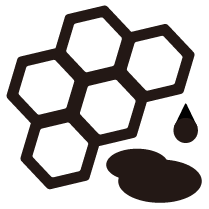

bee class
Bee點網站
人智學-與蜜蜂共舞
蜜蜂一書
晉福田有機香料農莊
小瓢蟲有機農場
Bee看知識
兇悍印象
真正主食
無名英雄
飛行訓練
手的溫度
太陽孩子
一箱一蜂
虛偽元首
冬暖夏涼
養蜂理由
太陽蜂巢
Bee查活動
我們不會告訴人們怎麼做
我們提供了資訊彙集的網站當作工具，讓人們能持續往正確的道路上前進，
這條路，不光是思想，而是需要大家一同去實踐。
 Bee點網站
Bee點網站 Bee看知識
Bee看知識 兇悍印象
兇悍印象 真正主食
真正主食 無名英雄
無名英雄 飛行訓練
飛行訓練 一箱一蜂
一箱一蜂 虛偽元首
虛偽元首 冬暖夏涼
冬暖夏涼 養蜂理由
養蜂理由 太陽蜂巢
太陽蜂巢 Bee查活動
Bee查活動